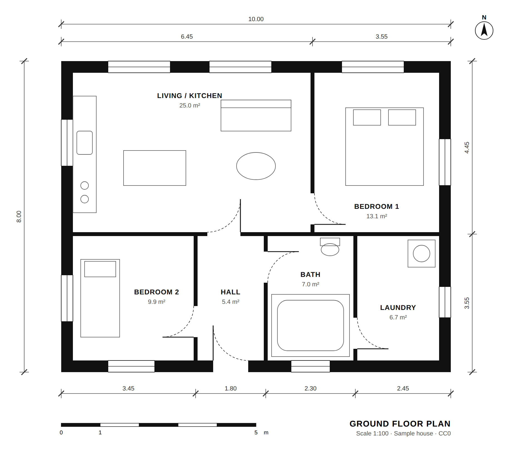
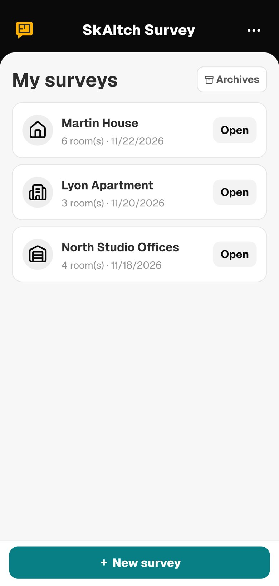
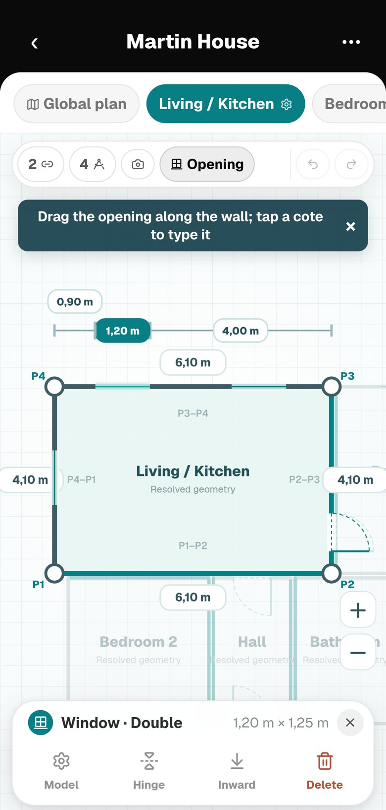
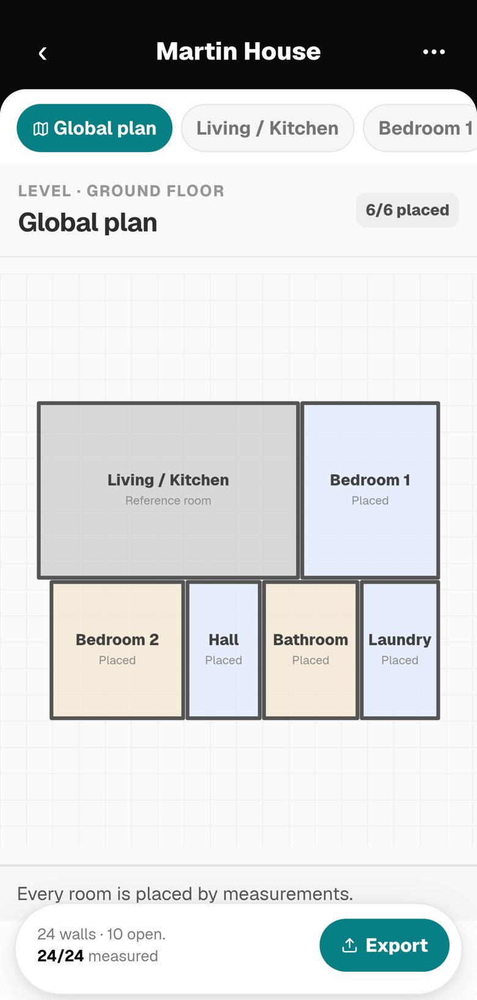
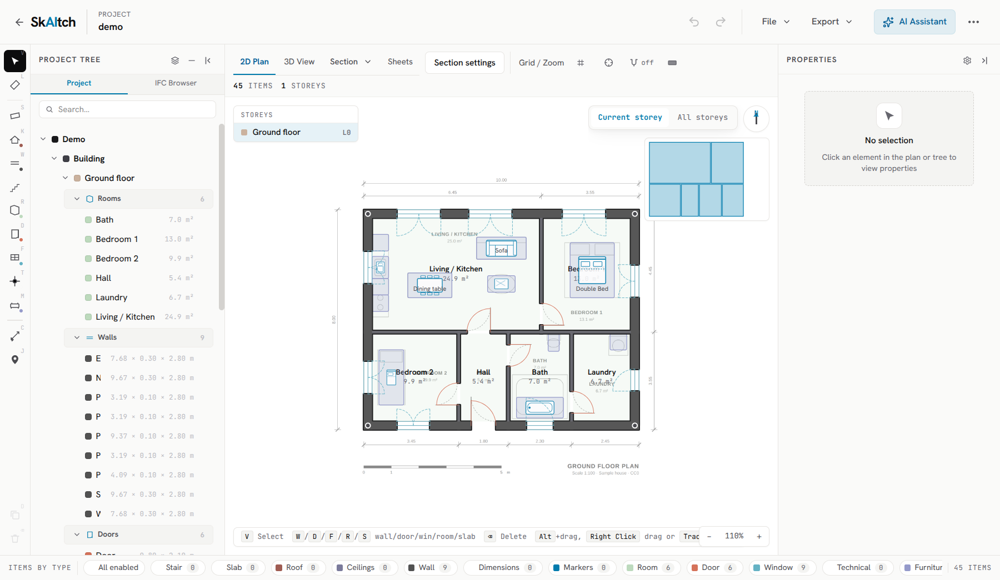
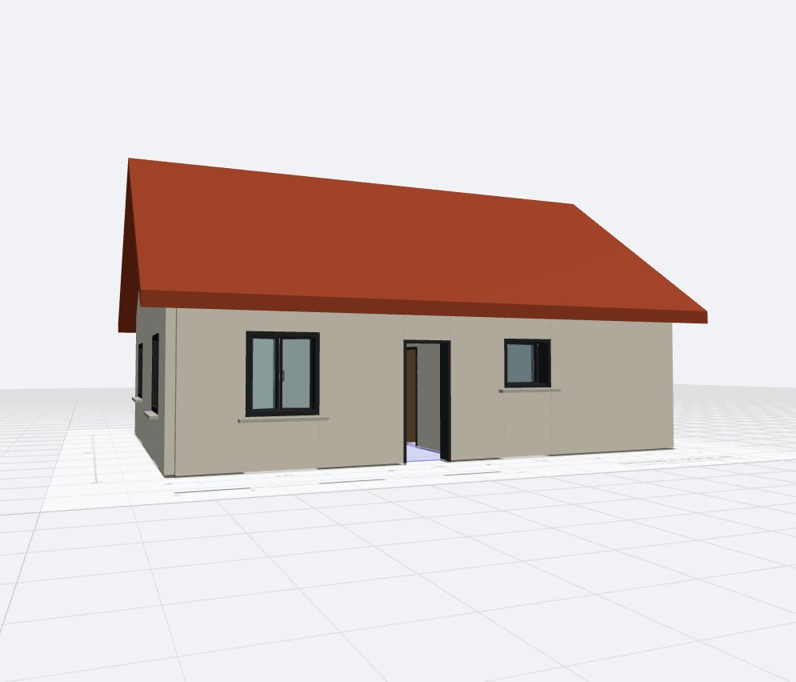
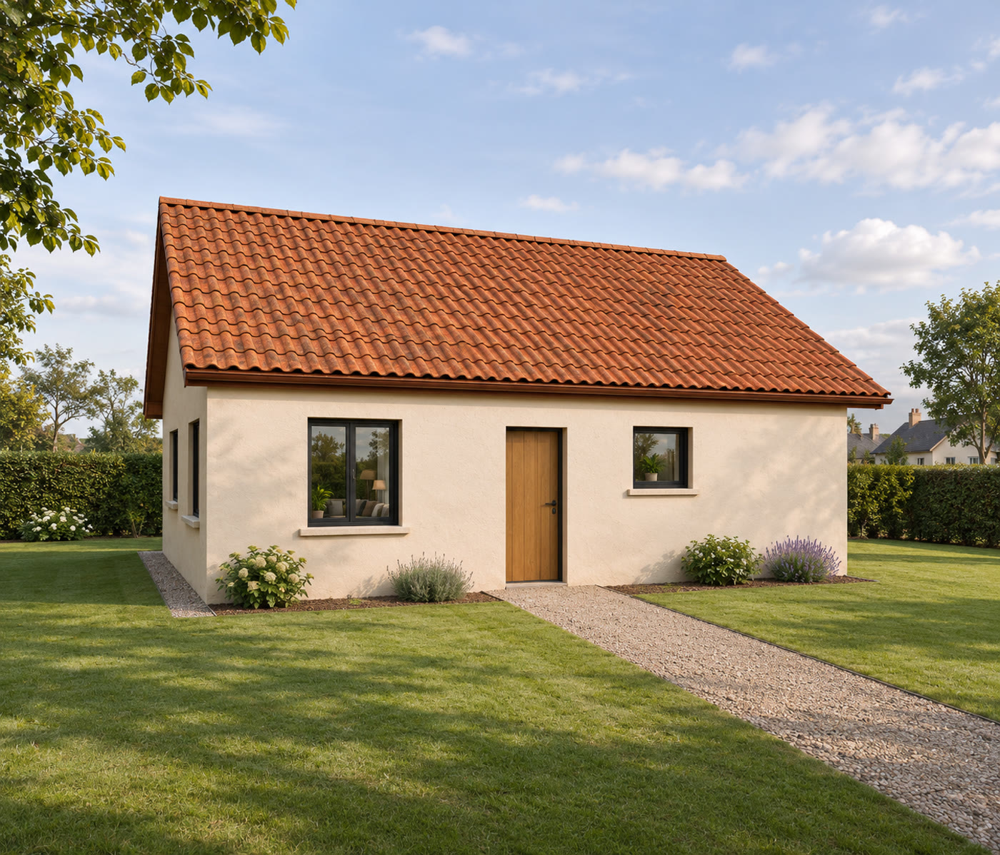

In the editor’s chat
Write what you want. The assistant changes the model in front of you, with the AI provider of your choice, and every element stays editable with the mouse.
skAItch is an IFC4 BIM editor you drive by talking. Give it a plan, an instruction or a site survey: the AI models walls, openings and rooms, and you keep control of every element.
Imported plan

IFC4 model in skAItch
Claude Haiku, over skAItch MCP
“Convert this plan into an IFC model, 2.80 m walls.”
select_storeyGround floorcreate_wall×9create_window×9create_door×6create_space×6create_furniture×11create_dimension×10create_roofgable, 35°export_ifcsample-house.ifc| ProjectSample house | LevelGround floor | Scale1:100 | FormatIFC4 | Modelled withskAItch |
Real screenshots: Claude Haiku, at low effort, read this plan and built the IFC model through skAItch’s local MCP server. Sample plan drawn for this site and released under CC0.
Start from whatever you have at hand: an idea, a plan or a site survey.
Write what you want. The assistant changes the model in front of you, with the AI provider of your choice, and every element stays editable with the mouse.
skAItch exposes its tools over MCP, MCP4IFC-compatible: storeys, walls, slabs, roofs, stairs, furniture, sections and sheets. Your agent reads the calibrated plan, measures, then builds the model.
On site, the mobile app records measurements and photos, even offline. Back at the office, import the survey into the storey, or receive it straight in your account.



The online editor, the desktop app and the site-survey app share the same engine and the same IFC4 model.
In the browser
The full editor at app.skaitch.online, with nothing to install. Your projects are saved to your account.
Windows, macOS, Linux
The same editor as a desktop application, working on local files.
Android and iOS
The site-survey app: measure each room on your phone, then bring the survey into skAItch.

The viewpoint comes straight from skAItch’s 3D view, captured over MCP. An image model then dresses it with materials, light and garden, without moving a wall.


Short demos, from getting started to importing a survey.
Installers arrive with the first public release. Until then, skAItch runs entirely in the browser.
Nothing to install. Recent Chrome, Edge, Firefox or Safari.
x64 installer. Unsigned build: in SmartScreen, click “More info”, then “Run anyway”.
Unsigned build: right-click the app, then “Open” on first launch.
Portable AppImage, or a .deb package for Debian and Ubuntu.
The offline site-survey app for Android and iOS.
skAItch is open source: the application under the AGPL-3.0, the packages/core engine under the MPL-2.0 so other projects can reuse it.